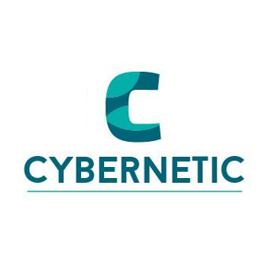

Mentions Légales & Politique de Confidentialité

Le projet et son site web CyberNeTic est un traitement de données personnelles géré par l'Université Bordeaux Montaigne.
1. Objet du traitement de données
Finalité :
Ce traitement a pour objet d’identifier les mécanismes d’influences et de manipulation
dans les discours des cyberharceleurs par la collecte et l’analyse statistique textuelle de
témoignages de victimes de cyberharcèlement.
Base légale :
L’exécution de ce projet de recherche est nécessaire à la mission de service publique
relative à l’enseignement supérieur et la recherche tel que décrite dans l'article 6 (1.e) du règlement général sur la protection des données (RGPD).
Le recueil de témoignage est facultatif et relève de votre consentement tel que décrit à
l’article 6 (1.a) du règlement général sur la protection des données (RGPD). Votre
consentement n'engage que vous et conformément à l’article 7 (3), vous pouvez le retirer
à tout moment.
2. Données traitées
Catégories de données traitées :
- Identification du témoignage (nom, prénom ou pseudonyme) ;
- Email pour contact ultérieur ;
- Champs libre (titre et témoignage) ;
- Captures d’écran et autres justificatifs ;
Source des données :
Ces informations sont recueillies directement auprès de l’usager.
Les données provenant de la gendarmerie sont complètement anonyme et ne seront
jamais diffusées à aucun tiers, individu ou intervenant.
Caractère facultatif du transfert de données :
Les données recueillies sont collectées et protégées de toute divulgation extérieur à la
gendarmerie et ne seront utilisées qu’à des fins d’analyses textuelles. Le seul transfert de
données sera donc celui du site web vers la base de données de l’hébergeur OVH.
Prise de décision automatisée :
Le traitement ne prévoit pas de prise de décision automatisée selon l’article 22 du RGPD.
3. Personnes concernées
Ce traitement concerne :
- Les témoins ;
- L’équipe scientifique responsable du programme ;
- Les administrateurs du site internet ;
4. Destinataires des données
OVH est le sous-traitant hébergeant le serveur et la base de données du site.
Catégories de destinataires :
En fonction de leurs besoins respectifs, sont destinataires de tout ou partie des données:
- L’équipe scientifique responsable du programme ;
- Les administrateurs du site internet ;
Transfert hors UE
Aucun transfert de données hors de l'Union européenne n'est réalisé.
5. Durée de conservation des données
Les témoignages seront anonymisés dans un délai d’un mois.
L’identification et les adresses de contact seront conservés pour la durée du projet, soit 5
ans.
6. Sécurité
Ce téléservice de l’administration française est en cours d'homologation (cf. référentiel
général de sécurité).
Le site est en “https” (connexion sécurisée), les mots de passe sont cryptés.
7. Vos droits sur les données vous concernant
Vous pouvez accéder et obtenir une copie des données vous concernant, vous opposer
au traitement de ces données, les faire rectifier ou les faire effacer. Vous disposez
également d'un droit à la limitation du traitement de vos données.
Comprendre vos droits sur les données personnelles.
Exercer ces droits
Le délégué à la protection des données (DPD) de l'université est votre interlocuteur pour
toute demande d'exercice de vos droits sur ce traitement.
- Par voie électronique à dpd@u-bordeaux-montaigne.fr
- Par courrier postal:
Université Bordeaux Montaigne
Domaine Universitaire
F33607 Pessac Cedex
Si vous estimez, après nous avoir contactés, que vos droits relatifs à vos données ne sont pas respectés, vous pouvez adresser une réclamation (plainte) à la CNIL.